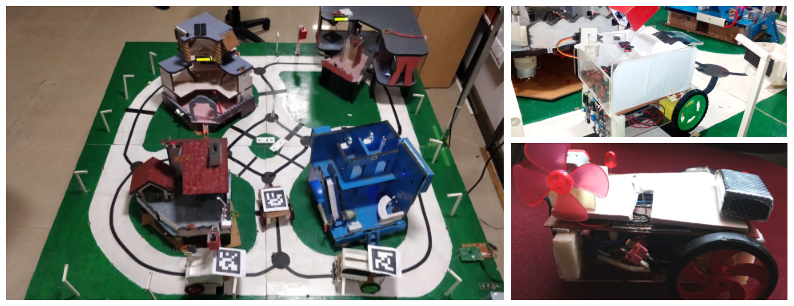

Smart City
As a part of the inter-branch course of 'Theory of Sensors and Actuators' NITK's Center for System Design tasked us with a practical project of bringing to life a model of a smart city. Being a part of a 40 strong group this task seemed simple at start but soon made us realise the complexities of mechatronics, wireless communications, databases and robotics.
The problem statement was simple: Make model of a 'Smart City' that has 3 buildings and 3 bots, each tasked with priorities and functions. The entire model was to be controlled through a central user interface (a website). The solution was to empower 3 buildings and 3 bots with a bunch of sensors and actuators and each with a microprocessor, each of which could serially communicate (i2c) with a central server (R-Pi). This central server handled all the high level tasks of scheduling the city tasks, path planning, the GUI and the communication between different modules.
Although the project seems student level in it's presentation. some of my experience gained during this project with circuit design and system development come useful now at Bosch RnD as we deal with similar problems only at a much higher level.